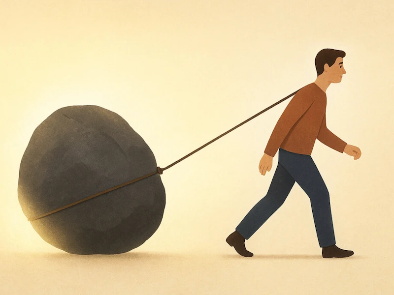
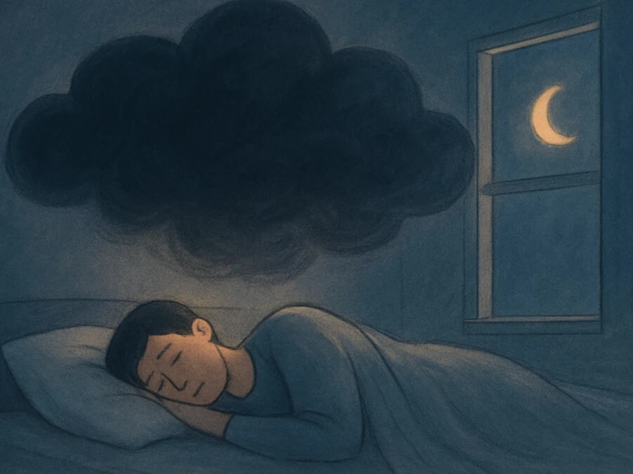
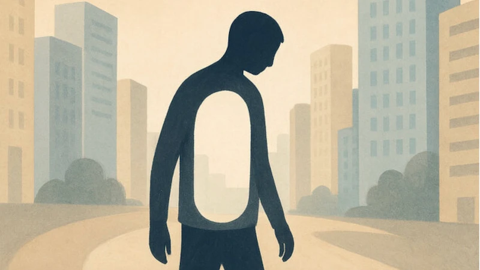
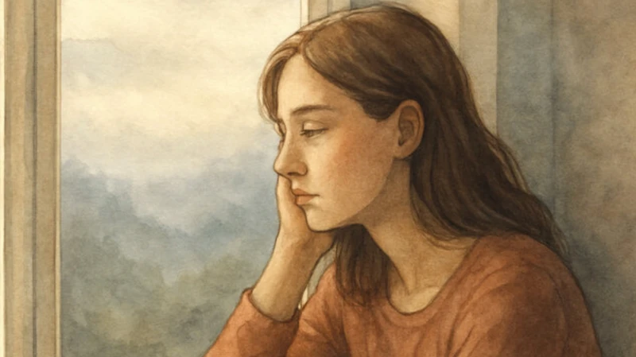
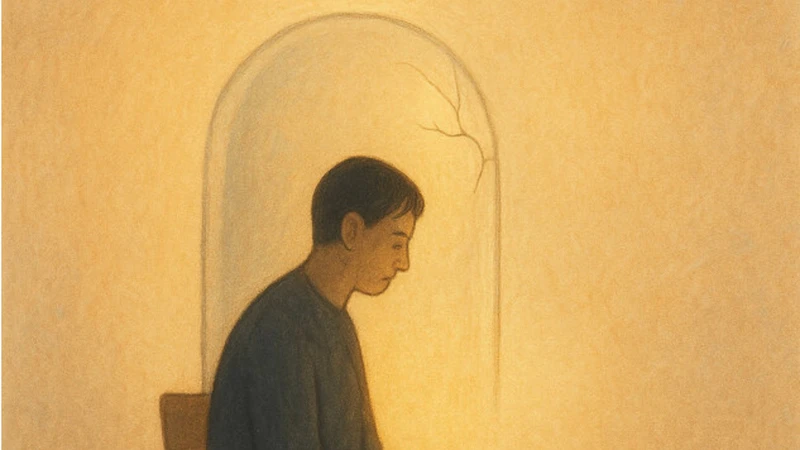

Нарушения пищевого поведения
История внутреннего взросления...
Читать далее →Помогаю обрести устойчивость, прожить кризис адаптации и найти новые смыслы в условиях неопределенности.
Меня зовут Наталья, я профессиональный психолог.
В моей работе я объединяю несколько методов и направлений психотерапии, стремясь к целостности и глубокому пониманию. Для меня важно рассматривать проблему с различных ракурсов, чтобы найти наилучшее решение.
2010 год
высшее образование
лет
опыта работы
Регулярно участвую в супервизиях и интервизиях; являюсь участницей книжного клуба для психологов; дальнейшие обучения по психологии запланированы на год вперед.
В моей работе я предпочитаю интегративный подход. Для меня это не просто методика, это философия.
Объединение различных теорий и техник с целью создания наиболее эффективного и комфортного пространства. Каждый человек уникален.
Бессознательное через образы («Сны наяву»), бережная проработка глубоких структур.
Осознание «здесь и сейчас», работа с контактом и завершение прерванных циклов.
Эмоционально-образная терапия для быстрой работы с психосоматикой и зажимами.
Визуализация аспектов жизни через творчество и метафорические карты.
Эриксоновский гипноз для мягкого изменения деструктивных паттернов мышления.
Работа на равных для достижения конкретных жизненных целей и самореализации.
Эмпатия и безусловное принятие ваших чувств как основа исцеления.
Поддержка после травматических событий и восстановление опор.
Я предоставляю онлайн-консультации для русскоговорящих клиентов по всему миру. Вы можете выбрать наиболее подходящий для вас формат взаимодействия:
Работа с конкретными точечными запросами. Мы используем быстрые методы и коучинговые стратегии для оперативного поиска решений и достижения видимых результатов.
Глубокая работа с травмами, поиск внутренних смыслов и качественная трансформация личности. Этот формат позволяет достичь устойчивых изменений в жизни.
"Лично мне символдрама помогает в работе со своим эмоциональным состоянием, помогает анализировать и лучше понимать себя. С Натальей работать приятно, легко и эффективно. Тактичный специалист, профессионал своего дела, человек, которому доверяешь❤"
— Мария
"Самое главное для меня то, что Наталья помогла мне посмотреть на мою ситуацию и проблемы иначе, а следовательно, и найти новые, и порой весьма неожиданные решения. Ее профессионализм и высокий уровнь эмпатии сделали процесс исследования себя комфортным и продуктивным."
— Елена
"Наталья работает очень бережно и деликатно, но в то же время уверенно, твердо. Я понимаю, что могу ей довериться и идти даже туда, где мне может быть больно и неприятно. С поддержкой такого специалиста мне не страшно проживать неприятные эмоции."
— Екатерина
"Хочу выразить огромную благодарность Наталье за проделанную работу. Арт-терапия и символдрама оказались удивительно мощными инструментами для самопознания. Рекомендую всем, кто ищет внутреннюю опору и хочет лучше понять себя."
— Влад
"Если бы мне нужно было описать Наталью как психолога, я бы использовала метафору мягкого облачка, которое меня каждую сессию бережно окутывало, и это было очень ценно. Благодарю за профессионализм и мягкость!❤"
— Ксения
История внутреннего взросления...
Читать далее →
Как перестать жить под тяжестью стыда и вины и вернуть себе свободу...
Читать далее →
Почему тревога не отпускает даже ночью...
Читать далее →
Эмиграция — это не только переезд...
Читать далее →
Почему депрессия — не просто грусть...
Читать далее →
Почему тело болит, когда вы в стрессе...
Читать далее →Если вы готовы начать путешествие к психологическому здоровью и лучшей версии себя, свяжитесь со мной! Вместе мы создадим пространство для вашего развития и самопознания.
Наталья свяжется с вами в течение 24 часов.